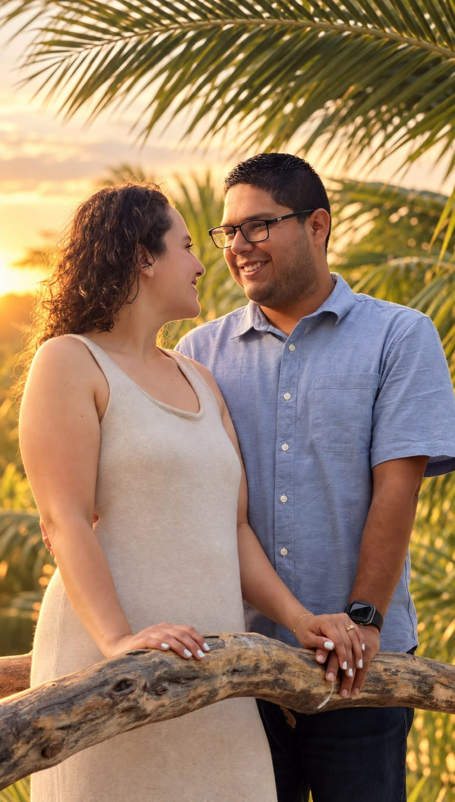
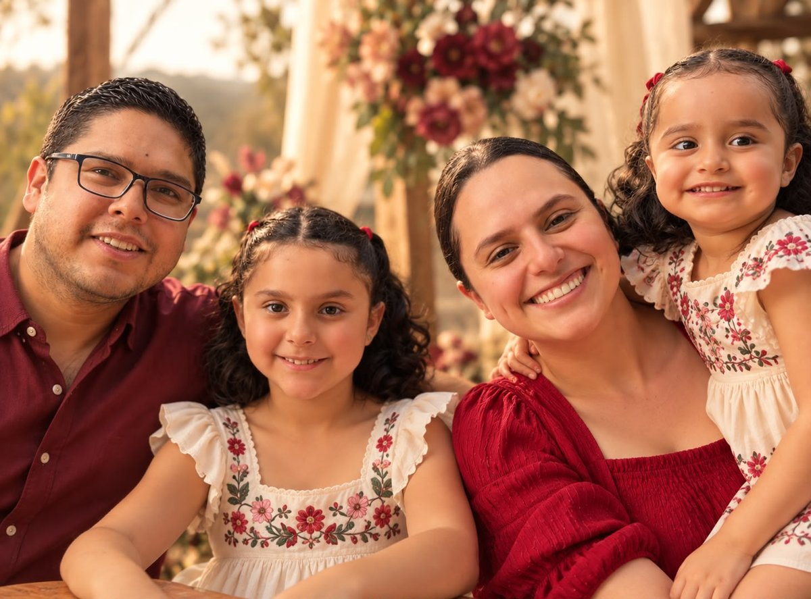

13años
de historias, aprendizajes
y una vida construida juntos.


Dos hijas que son
nuestro mayor regalo.
Y hoy queremos compartirles
algo que nos hace muy felices…
¡Nos comprometimos!
Después de todo lo que hemos vivido, decidimos elegirnos una vez más y comenzar una nueva etapa de nuestra historia.
Jalin & Jesús
03 · 04 · 2027
Ahora sí…
¡nos vamos a casar!